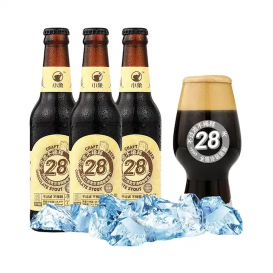
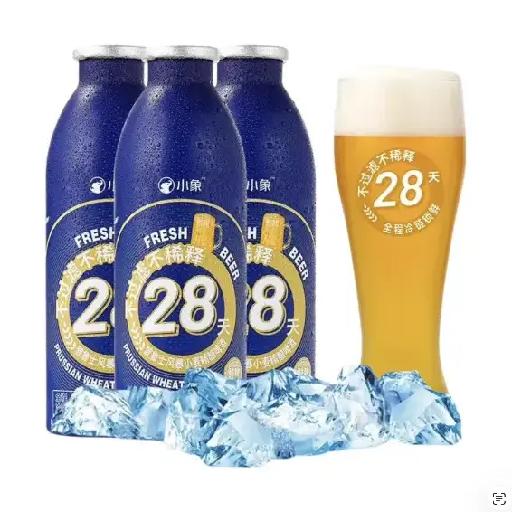
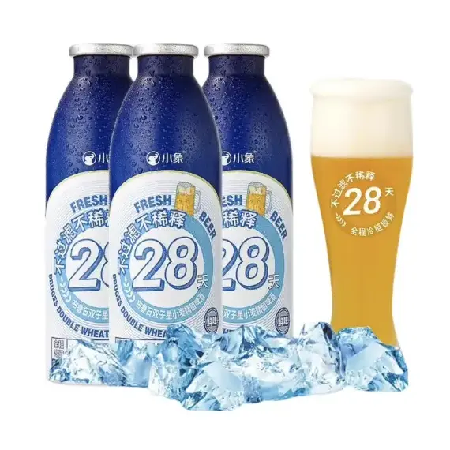
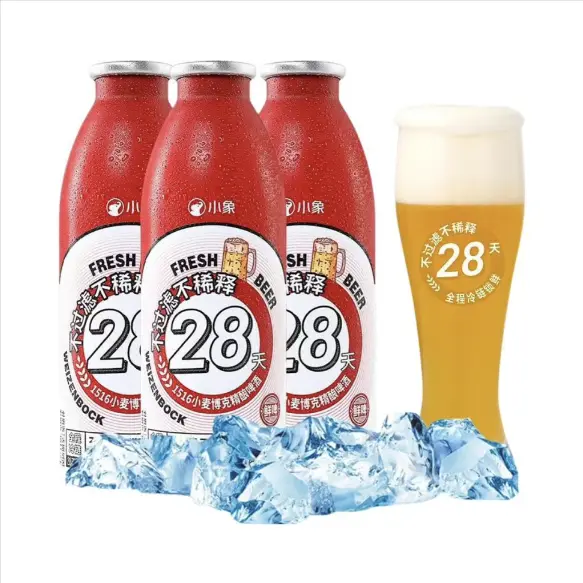
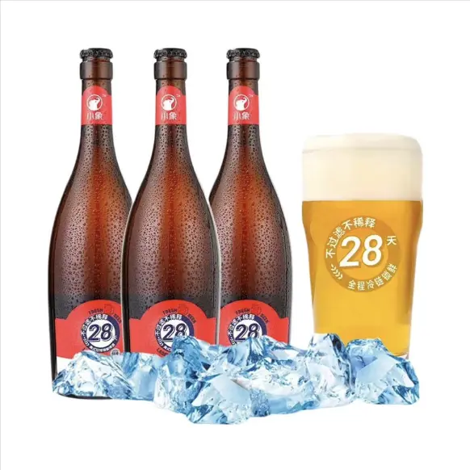
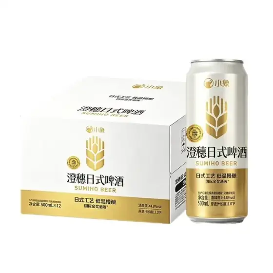
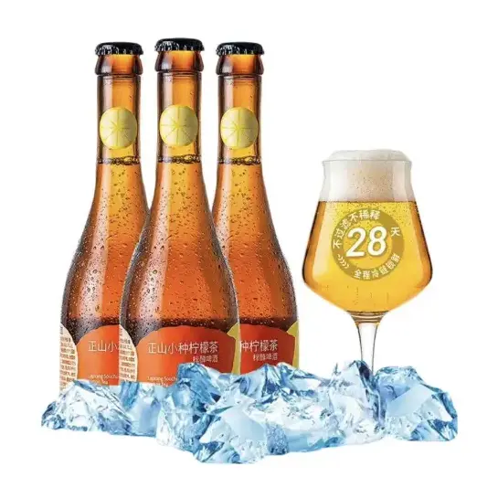
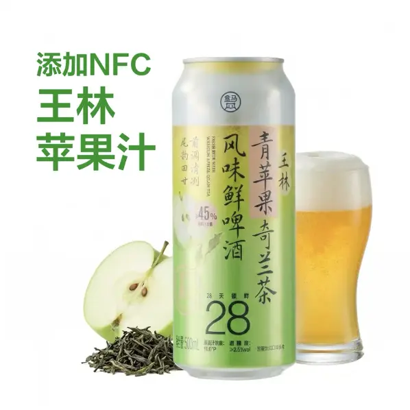

小象超市鮮啤簡評
夏天喝天冰啤酒是對我來說是件快樂的事情，相比可樂，啤酒也有綿密的汽泡，但沒有可樂那麼甜，可樂喝多了牙齒會有些不舒服，啤酒就不會；相比蘇打水，啤酒的風味會更多些；而白酒我喝不來，現在還是沒法品味白酒，高濃度的酒精味道太大了。汽泡足、有風味、酒精度不高、喝完有微醺感的啤酒是我夏日里比較喜歡的飲料。
最近買的比較多的是美团小象超市上的鮮啤，所謂鮮啤，一般指的是未經高溫殺菌、未經過濾的啤酒，优點是會保留下更多的天然風味與香氣，口感更濃郁、酒體更飽滿 (甚至有點混濁)；缺點是容易變質，保質期較短，一般只有數天到數週。
接下來就點評一些我買過的小象超市的鮮啤。

IPA (India Pale Ale，印度淡色艾尔) 是一種特色很明顯的啤酒，它有很突出的苦味，原因是粮造時會投入比其他啤酒更多的 啤酒花，啤酒花中的 alpha 酸 在加熱時會異構化轉變為很苦的 iso-alpha 酸。之所以要加大量的啤酒花，据說是因為當時要出口到遠方的印度，較高的啤酒花含量起到了天然防腐劑的作用 (iso-alpha 酸具有抗菌效果)，防止啤酒在長途航行中變質。同時，啤酒花也是啤酒風味的來源，大量的啤酒花也帯來了強烈風味和香氣。
最早喝過的 IPA 是鹅島 (Goose Island) 綠瓶裝的 IPA，當時不知道 IPA 是什麼，明顯的苦味還以為啤酒有問題，留下了很深的印象，後來喝多了也就對苦味習慣了，苦味本身也是一種風味。
小象超市賣的這款 美式 IPA 是典型的 IPA 風味，不是特別苦。在吃飯時喝，不知道是不是食物和啤酒發生了什麼反應，會有一股强烈獨特的香味，比直接喝時更明顯，很適合用來體驗 IPA。
{kind=link}

世濤 (Stout) 是一種深色啤酒，通常採用 頂層發酵（暖發酵）工藝，我喝過的世濤不多，它們的酒體都是黑色的，像是醬油一樣。
巧克力世濤 是世濤的一種子類，它透過使用顏色更深、更具香氣的麥芽，特別是巧克力麥芽（一種經過烘烤或窯烤直至呈現巧克力色的麥芽），而具有明顯的黑巧克力風味。
小象的巧克力世濤啤酒巧克力味道非常明顯，酒的口感很濃郁，喝多了會有些膩，適合偶尔喝喝換換口味。
{kind=link}

普鲁士风暴是一種 白啤 (Wheat bear，小麥啤酒)，也是採用 頂層發酵（暖發酵）工藝，其小麥相對於麥芽化大麥的釀造比例較高。
小麥啤酒主要有兩大品種：
- 德國的 Weizenbier，使用發芽的小麥製作
- 比利時的 witbier，使用未發芽的小麥製作
普鲁士风暴大概是 Weizenbier 類型的，酒體濃郁、泡沫豐富，是喝起來比較飽滿的小麥啤酒。
{kind=link}

布鲁日双子星是比利時的 witbier 類的白啤，這類啤酒往往會加入一些香料釀製，如橙皮、芫荽籽等，最終啤酒里也會多一些風味。酒體相比德式的白啤感覺更輕盈。
{kind=link}

小麥博克也是小麥啤酒，描述上說小麥的用量更多，酒精度去到了 6.6，能喝出很明顯的酒精味，因為我不喜歡酒精的味道，嘗試過一次之後我就再沒買過了，喝起來不如普鲁士风暴和布鲁日双子星。
{kind=link}

美式拉格是一款 拉格 (Lager) 啤酒，這是一種在 低溫下釀造 和熟成的啤酒類型，和上面的 頂層發酵（暖發酵）對應。便利店、超市賣的大多数啤酒都是拉格啤酒，常見的雪花、純生、青島、百威、珠江等大多都是拉格，它的酒體一般都比較清澈，喝起來清爽、明亮。但國內做的大多数拉格喝起來都很寡淡，沒什麼味道。
小象這款美式拉格還不錯，可能因為是鮮啤，未過濾，所以喝起來不會覺得寡淡。它是 750 ml 的，量大管飽，瓶子也好看，像是气泡酒的瓶子。
{kind=link}

澄穗日式啤酒也是拉格啤酒，日本大多数都是拉格啤酒。澄穗日式是目前几款啤酒里最清澈的，喝起來很清爽，甚至有點麦芽的甜，是我覺得最適會當口粮的一款啤酒。
{kind=link}

除此之外，小象上還有一類啤酒是通過混合糖浆得到的，能混出各種風味，大概就是美式咖啡和橙 C 美式的差別，喜歡甜的，果汁味的可以試試。對我來說有點甜了，偶尔喝喝還可以，喝多了也是覺得膩，像是往啤酒里倒白沙糖的感覺。本來喝酒就不健康，還要往酒里加糖，就更不健康了。
這類糖浆啤酒盒馬超巿也有，小象的喝膩了也可以去盒馬看看，不同季節會有不同的風味。
{kind=link}

最後給一份挑選指南：
- 想喝清爽的，選澄穗日式；想量大點就選美式拉格。
- 想喝濃郁些的，選普鲁士风暴；想多點風味，選布鲁日双子星；想酒精度更高，酒精味更明顯，選小麦博克。
- 想喝點風味強烈的，選美式 IPA 或巧克力世濤。
- 想喝點小甜水，但又想有點酒精，就找各種混糖浆的啤酒。